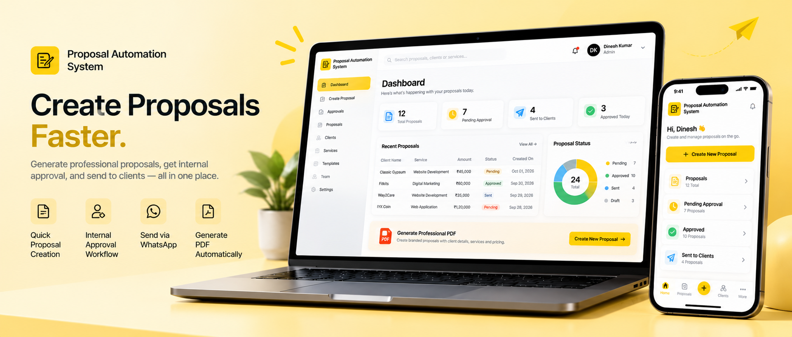

Repetitive Manual Data Entry
Staff copy customer, order or inventory data between spreadsheets, billing tools and messaging apps because the systems do not communicate.
RiverBird Digital Solutions Pvt. Ltd. designs, engineers and maintains custom software around the way your organisation actually works—from one high-friction workflow to a multi-team enterprise platform.
Growing businesses often reach a point where spreadsheets, WhatsApp threads and rigid off-the-shelf subscriptions begin slowing down daily work. Staff re-enter the same data across disconnected tools, managers wait on manual reports, and standard templates force teams into clumsy workarounds.
Operating from Karur Bypass Road in Melachinthamani, Tiruchirappalli, RiverBird partners with companies across Tamil Nadu, India and international markets to replace manual bottlenecks with structured databases, role-based internal systems, connected APIs and cloud-ready applications.Before production code begins, our engineering team maps your users, data, rules and integrations into a clear, maintainable technical blueprint.
Not every business challenge requires custom code. If a standard accounting tool, payroll package or CRM covers your process at a sensible cost, buying an existing product is usually the right decision. A tailored system earns its keep when your core workflow is the part standard tools cannot handle cleanly.
Staff copy customer, order or inventory data between spreadsheets, billing tools and messaging apps because the systems do not communicate.
Quotations, purchase requests, dispatch clearances or branch records need granular permissions and reliable audit trails.
Adding staff, branches or vendors multiplies SaaS licensing fees for dozens of features your organisation never uses.
Your product, marketplace or specialised service needs a distinct user journey and backend logic— that generic software cannot represent.
During discovery, we review your current process first. If an existing platform or a simpler integration solves the problem more economically, we tell you upfront.
Within our broader software and web engineering practice, we focus on database-backed systems, operational automation and maintainable backend architecture.
Focused ERP modules for inventory, procurement, branch work and reporting with role-based access.
Approval routing, status alerts, data validation and connected departmental records.
Purpose-built interfaces, rules, roles and exception handling for the way your industry works.
Cloud-ready products with tenant isolation, billing logic—, dashboards and responsive interfaces.
Secure spaces for clients, dealers and vendors to submit, track, download and manage requests.
Documented APIs, database optimisation and phased legacy modernisation without sudden operational disruption.
Software projects fail when developers start coding before operational requirements, user permissions, and edge cases are clearly defined. We follow a structured four-stage engineering pipeline designed to keep scope, progress, and quality transparent:
We map who will use the software, what data they enter, what approvals apply, and which existing tools must stay connected. Instead of pushing an oversized first build, we define a focused first release (MVP) supported by wireframes, schemas, and a written scope in INR.
Our engineers develop your system in structured modules—setting up the database layer, backend business logic—, API endpoints, and responsive user interfaces. Building in reviewable stages allows your team to test real workflows early.
Before any system goes live, we validate core user journeys, role permissions, invalid-input handling, and database performance under expected workloads. We configure SSL encryption, authentication, and automated CI/CD pipelines on AWS, GCP, or your server.
A software launch is the start of daily usage, not the end of engineering responsibility. We walk your staff through the system, complete agreed documentation, and remain available for monitoring, security updates, performance tuning, and phase-two feature expansion.
Launch fast, polished digital products across iOS, Android and the web-from customer apps to progressive platforms engineered around your business.

Engagements are quoted in INR (₹) with applicable GST details, using the structure that best fits how defined or evolving your software requirements are.
Best when requirements, user roles and deliverables can be defined upfront. After discovery, you receive a milestone-based scope, timeline estimate and fixed commercial proposal.
Best for evolving SaaS products, multi-phase enterprise rollouts and ongoing monthly feature development, automation upgrades or system maintenance.
Sharing four practical details helps our engineering team understand your workflow and give you an accurate scope recommendation within one business day:
Which manual process, spreadsheet workflow, or existing software limitation is slowing your team down?
Who will log into the system (e.g., internal admin staff, branch managers, field executives, external customers, or vendors)?
Do you need the new software to exchange data with an existing accounting package, CRM, payment gateway, or website?
Do you have a target go-live window or an indicative budget range in INR for the first release?
Clear answers about choosing, budgeting, integrating, launching and maintaining custom software.
If a ready-made software product handles 80% or more of your daily workflow at a reasonable subscription cost, off-the-shelf software is usually the more practical choice. Custom software becomes worthwhile when your core competitive process relies on the remaining 20%—such as specialized approval chains, multi-branch operational rules, custom pricing calculations, or cross-tool data flows—where forcing staff into manual workarounds costs more in lost time and errors than building a tailored system.
The cost of custom software depends on the number of distinct user roles, the complexity of your business logic— and reports, third-party API integrations (such as payment gateways, WhatsApp, or accounting exports), data migration needs, and hosting requirements. After a discovery discussion, we provide a written estimate in Indian Rupees (INR) structured either as a milestone-based fixed-scope project or a monthly dedicated-team engagement.
Yes, provided your existing software offers a supported API, webhook, or structured data import/export format. During the discovery and blueprint stage, we inspect the technical documentation of your current CRM, ERP, payment gateway, or database to confirm integration feasibility and design automated data syncs that reduce manual double-entry.
Delivery timelines depend on the size of the first release, data readiness, integration complexity, and how quickly your team can review staged prototypes. Rather than delaying launch for a massive all-at-once build, we recommend scoping a focused first release around your most critical operational workflow so your team can start using working software earlier and add secondary modules in phases.
Before launch, we test core user scenarios and permissions, deploy the application to your production environment, and guide your staff through daily operation. After go-live, we offer ongoing support and maintenance plans covering server monitoring, security updates, bug fixes, database backups, and new feature development as your transaction volume and team grow.
Turn your workflows and product ideas into secure, maintainable software engineered around your business.